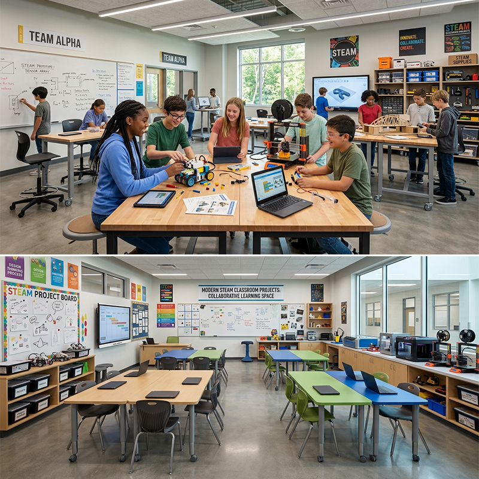
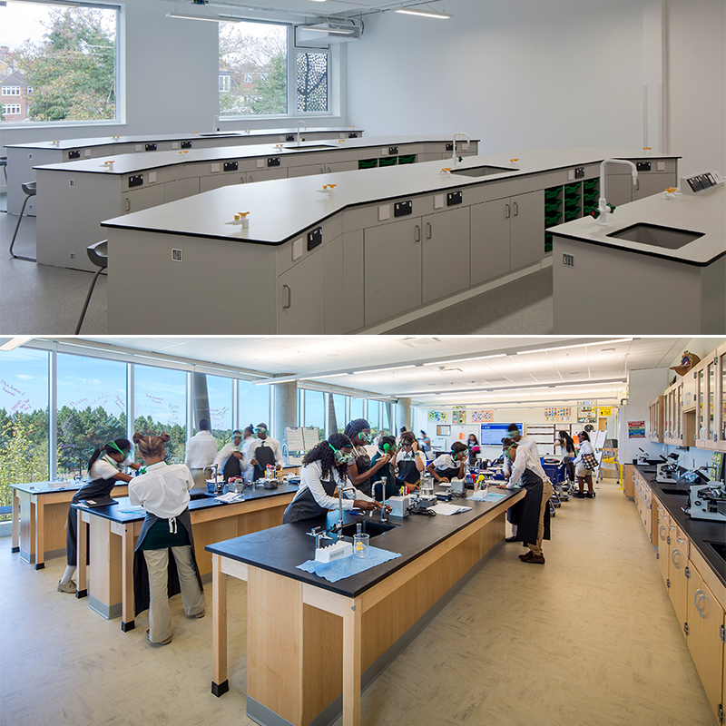
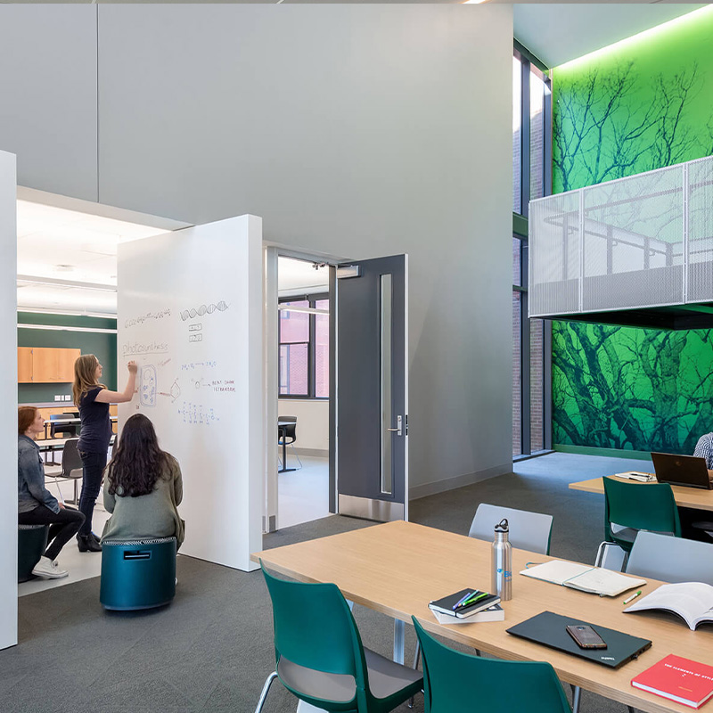
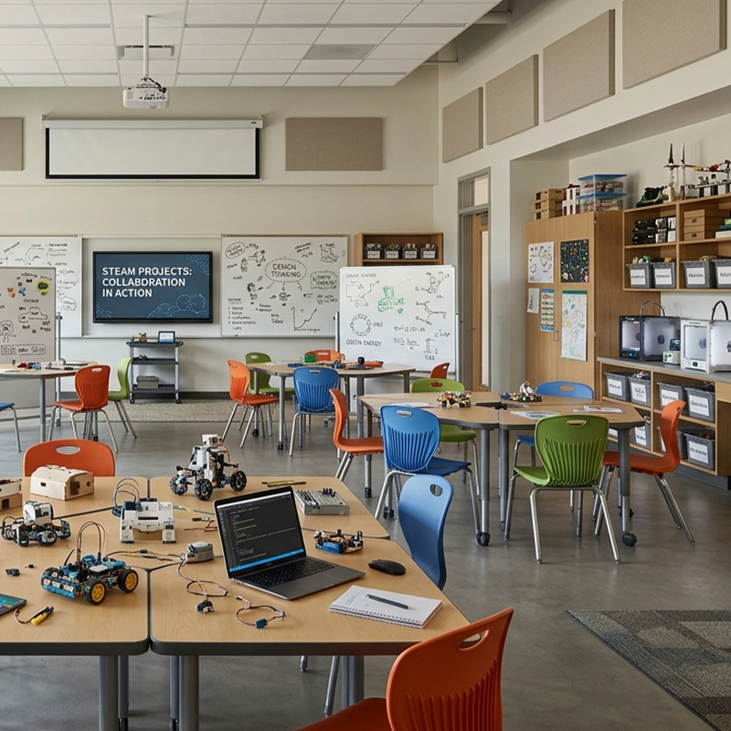

Las mesas de trabajo resistentes crean un taller creativo en casa donde dar rienda suelta a las manualidades, los proyectos DIY y las maquetas. El tablero grueso resiste cortes, pintura y productos de bricolaje, mientras que la estructura de acero garantiza la estabilidad durante el trabajo. Los modelos con ruedas permiten mover el taller a otra estancia o guardarlo para liberar espacio. Una mesa robusta y versátil para los aficionados al bricolaje, las manualidades y los proyectos escolares más exigentes.
El tablero grueso de madera maciza o resina resiste los cortes del cúter, la pintura y los productos de bricolaje. Los proyectos de maquetas y manualidades se realizan sobre una superficie estable que no se raya con el uso habitual.
La estructura de acero con patas reforzadas soporta hasta 300 kg de carga, aguantando herramientas, materiales y proyectos en curso. Los protectores de las patas evitan rayones en el suelo del hogar.
El modelo con ruedas de freno permite mover el taller de la mesa del salón al garaje o a la habitación de los niños según el proyecto. Cuando no se usa, se aparta contra la pared para ganar espacio.
Las opciones con tomas de corriente integradas alimentan pistolas de silicona, taladros pequeños y cargadores en la propia mesa, sin cables sueltos por el suelo. El trabajo se realiza con todo el material al alcance.
La mesa se combina con taburetes altos y módulos de almacenamiento de la colección para completar un taller en casa ordenado y funcional.
| Modelo | Tablero | Extra | Espacio |
|---|---|---|---|
| Mesa fija | Madera maciza | Ninguno | Garajes y talleres |
| Con ruedas | Resina resistente | Freno integrado | Salones flexibles |
| Con toma eléctrica | Madera maciza | Corriente + USB | Talleres de maquetas |
| A medida | Configurable | Configurable | Hogares singulares |
| Material | Tablero de madera maciza 38 mm o resina resistente |
| Estructura | Acero 1,5 mm con recubrimiento en polvo |
| Carga | Hasta 300 kg de carga repartida |
| Opciones | Ruedas de freno, tomas de corriente y USB |
| Medidas | 120-160 × 60-80 cm |
| Montaje | Manual ilustrado, unos 40 minutos |
| Garantía | 2 años en estructura |
Taller de manualidades en casa: mesa resistente para pintura, collage, costura y proyectos escolares de los niños.
Zona de bricolaje: banco de trabajo para pequeños arreglos, herramientas y proyectos de restauración de muebles.
Mesa de proyectos de estudio: superficie amplia para maquetas, robótica casera y experimentos científicos de los estudiantes.
El tablero de resina resistente soporta cortes ligeros con cúter sin marcas profundas. Para cortes con sierra o trabajos de carpintería se recomienda usar una tabla de corte protectora, que se vende como accesorio.
Sí, las ruedas incorporan frenos que se activan con una palanca y fijan la mesa por completo. Con los frenos activados, la mesa se mantiene estable incluso al serrar o taladrar con herramientas de mano.
Los modelos de interior no están diseñados para la intemperie. La humedad y el sol pueden dañar el tablero y la estructura. Para uso en garajes o trasteros sin climatizar, recomendamos un acabado sellado adicional bajo pedido.
Este producto también está disponible en versión profesional para colegios e instituciones: Ver versión escolar →
Reciba información detallada de todos nuestros productos de mobiliario escolar.
📋 Solicitar catálogo